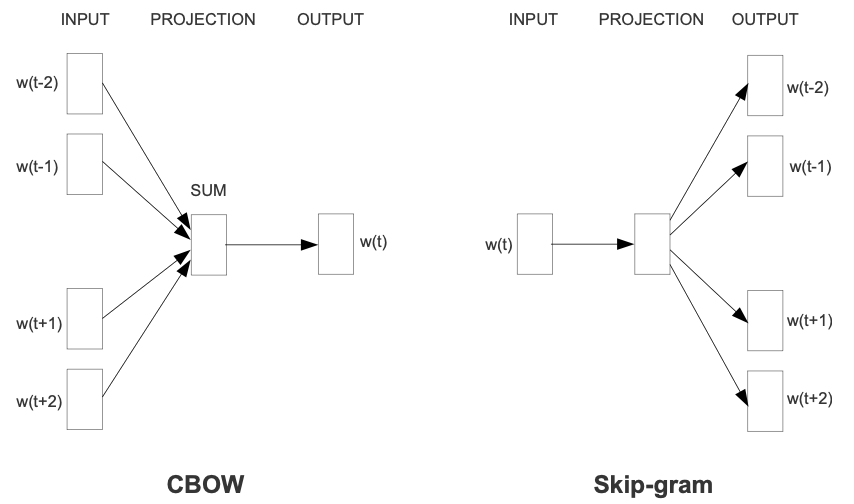
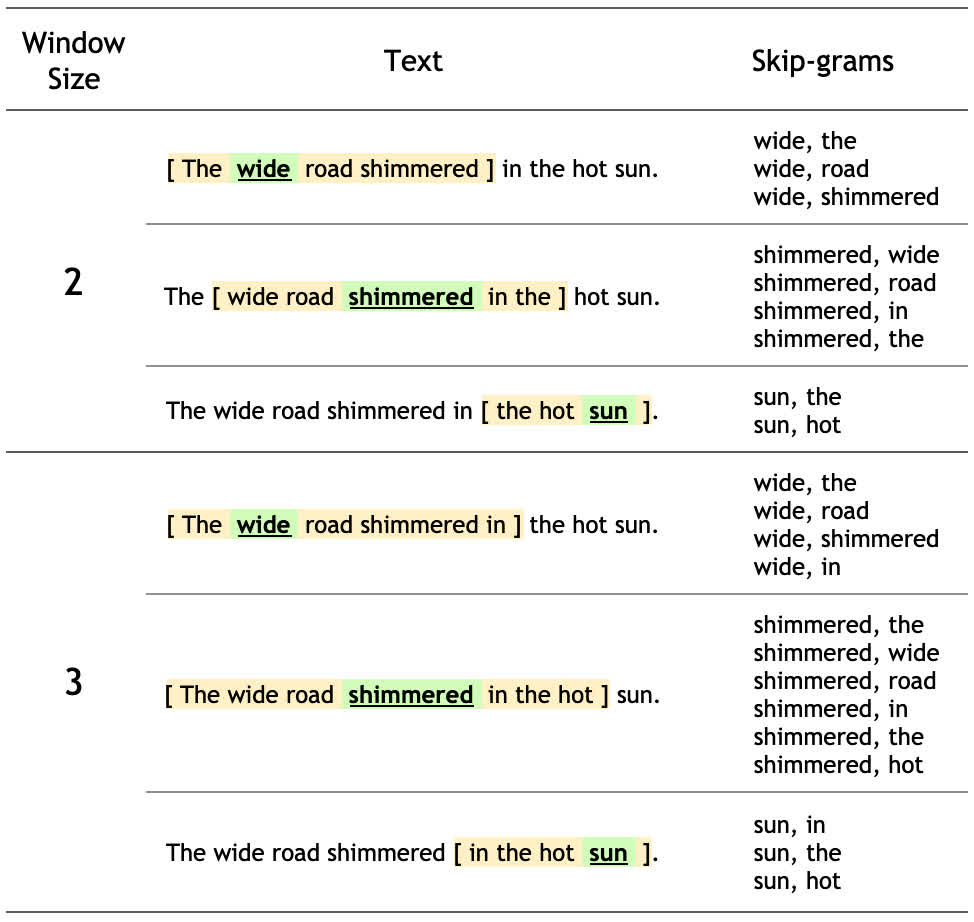

4.5 word2vec
使用 Skip-gram 算法从大型数据集中提取词向量！
创建日期: 2025-04-04
word2vec 不是单个算法，而是一系列模型架构和优化方法，可用于从大型数据集中学习词向量。通过 word2vec 学习的词向量，已被证明在各种下游自然语言处理任务中都取得了成功。
本教程是基于 Efficient estimation of word representations in vector space 和 Distributed representations of words and phrases and their compositionality 。它不是论文的精确实现，相反，旨在说明关键思想。
这些论文提出了两种学习词语表征的方法：
连续词袋模型 (CBOW)：根据周围的上下文单词预测中间的单词。上下文由当前（中间）单词前后的几个单词组成。这种架构被称为词袋模型，因为上下文中的单词顺序并不重要。
连续跳字模型 (Skip-gram)：预测同一句话中当前单词前后一定范围内的单词。

在本教程中使用 skip-gram 方法。首先我们将使用单个句子来说明 skip-gram 和其它概念。接下来，我们将在小型数据集上训练自己的 word2vec 模型。本教程还包含用于导出训练后的词向量并在 TensorFlow Embedding projector 中对其进行可视化的代码。
4.5.1 示例介绍
词袋模型根据相邻上下文预测单词，而 skip-gram 模型则根据单词本身预测上下文（或相邻单词）。本模型在 skip-gram 上进行训练，它是一种 n-grams 算法，只是允许标记被跳过（可以查看下面的示例）。单词的上下文可以通过一组 skip-gram 对 (target_word, context_word) 来表示，其中 context_word 出现在 target_word 中的相邻上下文。
考虑以下八个单词的句子：
The wide road shimmered in the hot sun.
此句子的 8 个单词中的每一个的上下文单词都由窗口大小定义。窗口大小决定了 target_word 两侧的会被考虑的 context_word 单词。下面是一个不同的窗口大小的表格：
对于本教程，窗口大小 \(n\) 意味着每边有 \(n\) 个单词，总窗口跨度为 \(2 * n + 1\) 个单词。

Skip-gram 模型的训练目标是最大化给定目标词预测上下文单词的概率。对于单词序列 \(w_1, w_2, ..., w_T\) ，目标可以写成平均对数概率：
其中，\(c\) 是训练上下文大小，基本的 skip-gram 公式使用 softmax 函数来定义 \(p(w_O|w_I)\) 这个概率：
其中 \(v_w\) 和 \(v_w^{'}\) 是 \(w\) 的输入和输出向量表示。\(W\) 是词汇表的单词数量。这个公式是不可行的，因为计算 \(\nabla log(p(w_O|w_I))\) 和 \(W\) 成正比，而 \(W\) 通常很大（\(10^5 ~ 10^7\) 项）。
点积的结果衡量了两个词向量之间的相似性，通常可以用于度量词与词之间的关联性。点积越大，表示两个词在语义上越相似。
噪声对比估计 (NCE) 损失函数是上面的 softmax 的有效代替，如果目标是学习词向量，而不是对词分布进行建模，这可以简化 NCE 损失，以使用负采样。
负采样通过减少需要更新的词向量数量来加速训练过程。它的关键概念是：不是每个词汇都需要参与每次训练，尤其是负样本。负样本是指与目标词无关的词汇，通过这些词的反向传播，模型可以学会区分正样本（目标词）和负样本（随机词汇）。
目标词的简化负采样目标是将上下文词从 num_ns 个使用噪声分布 \(P_n(w)\) 的负采样单词中分离出来。更准确地说，对完整词汇表做 softmax 操作可以近似为将目标词的损失市委上下文词和 num_ns 个负样本之间的分类问题。
负采样也是定义为 (target_word, contxt_word) 对，只是 context_word 不是出现在 target_word 单词 window_size 长度周围。比如，下面几一个是潜在的负采样（window_size 大小为 2）：
(hot, shimmered) (wide, hot) (wide, sum)
在之后的小节中，我们会为每个句子生成 skip-grams 和负样本。还会了解子采样技术，并为正训练示例和负训练示例训练分类模型。